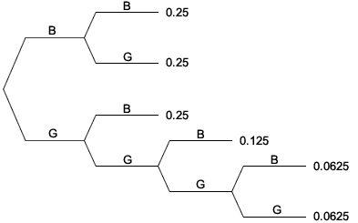

Discrete random variables
We now give a formal definition of a discrete random variable.
Definition
A discrete random variable is a function that gives a numerical value for each outcome in a sample space and whose possible values are either finite or countably infinite.
This definition is necessary for situations in which there are two or more random variables. For example, we might roll three dice and be interested in both the minimum of the three values and their sum — both are discrete random variables. However in many applications, it is possible to use a simpler definition that is easier to understand.
Simpler (but less general) description
An experiment whose outcomes are numerical and whose sample space is either finite or countably infinite can be treated as a discrete random variable.
Most discrete random variables that we will consider in this e-book can be interpreted in this way. In most of them, the outcomes are whole numbers — counts of something.
Examples
Our definition of discrete random variables also includes experiments whose outcomes are not integers. For example, the proportion of surviving beetles out of ten that are given the low dose of insecticide would also be a discrete random variable — its possible values are {0.0, 0.1, 0.2, ..., 0.9, 1.0}. We will however concentrate on discrete random variables with whole-number outcomes.
Probability function
The randomness of a discrete random variable, X, is fully described by the probabilities of all possible values. These probabilities are jointly called the variable's probability function.
\[ P(\text{outcome } x) \;\;=\;\; P(X=x) \;\;=\;\; p(x) \]By convention, we use capital letters such as X when referring to random variables. Lower-case letters are used as shorthand for an arbitrary value. We could therefore replace "x" above with the value "2",
\[ P(\text{outcome } 2) \;\;=\;\; P(X=2) \;\;=\;\; p(2) \]Example: Girls in a family
A couple want at least two children and no more than four. However, subject to this constraint on their total number of children, they will stop when they get a boy.
Assuming that there are no multiple births and the probability of any child being male is \(\frac 1 2\), independent of the genders of previous children, what is the probability function for the number of girls in the family?
In the previous section, we used a tree diagram to show the possible sequences of births in the family.

By adding probabilities for different branches, we found the probabilities for the various different numbers of girls in the family, X,
| Number of girls, x | 0 | 1 | 2 | 3 | 4 |
|---|---|---|---|---|---|
| P(X = x) | 0.25 | 0.5 | 0.125 | 0.0625 | 0.0625 |
This table describes the probability function for X.
A random variable's probability function may be described by a table of probabilities (if there is a finite number of possible outcomes) but is more often described by a mathematical formula, such as
\[ p(x) = \begin{cases} \displaystyle \frac 1 {(b-a+1)} & \text{for } x = a,\dots, b \\[0.3em] 0 & \text{otherwise} \end{cases} \]Other probabilities
From the probability function, we can find the probability of any other event relating to the random variable. For any event, \(A\), we just need to add up the probabilities for the values in \(A\) since all values are mutually exclusive:
\[ P(A) = \sum_{x \in A} p(x) \]For example,
\[ P(2 \le X \le 4) \;=\; p(2) + p(3) + p(4) \]Properties of probability functions
In order to be the probability function of a discrete random variable, a function \(p(x)\) must satisfy a few properties.
Properties of probability functions
\[ p(x) \ge 0 \text{ for all } x\\[0.4em] \sum_{\text{all } x} p(x) = 1 \]The first property is a consequence of the first axiom of probability — all probabilities must be between 0 and 1.
The second property arises because the different x-values form a partition of the sample space — one and only one value must occur.
\[ P(S) = \sum_{x \in S} p(x) = 1 \]